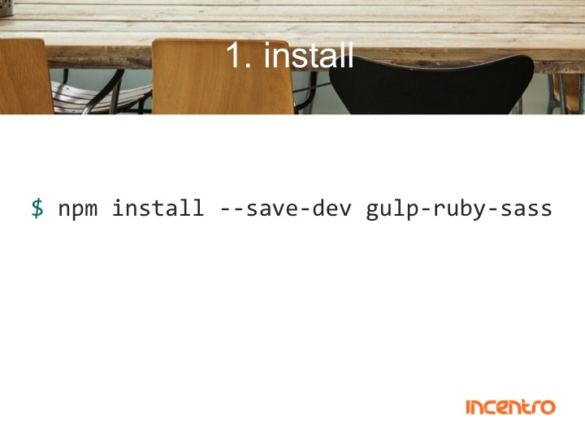

frontend workflow
Created by Rob van der Burgt & Kasper Reijndersrob van der burgt
kasper reijnders
incentro
what is frontend?
frontend is everything that has to do with browser behaviour.
time-machine
web 2.0
- tag-clouds
- user participation
- all about the user
- cloud
- not userfriendly


so where are we now?
- accessibility
- adaptive
- analytics
- build process
- conversion
- design
- different browsers
- pre-processors
- responsive
- sea
- seo
- speed
- smartphones
- smartwatches
- technology
- testability
- tracking
- user experience
- and so on...
two challenges
1: high knowledge level
- Large initial investment
- High experience required
2: manual actions
- High error risk
- Time consuming
- Difficult handover
existing solution
libraries
- jQuery
- dom.js
- ..
frameworks
- Backbone.js
- Angular
- Ember.js
- ..
preprocessors
- SCSS
- Less
- Autprefixer
- ..
minifiers
- YUI compresor
- css optim
- ..
build scripts
- ant
- maven
- ..
All set
Tough luck
task runners
sugar, spice, and everything nice!
grunt

gulp

enter node.js
adding functionality



exercise
configure autoprefixer
- create src dir
- add css
- install gulp-autoprefixer
-
configure autoprefixer task in gulp
( remember where the build result should be? ) - run gulp
configure css minifier
- install gulp-minify-css
-
configure minify css task in gulp
( add to existing css pipe ) - run gulp
configure watch, browsersync & html task
- create task to copy html from source to build directory
- create watch task wich starts browsersync and automatically executes tasks
- install browsersync, serve files from build directory
- run gulp